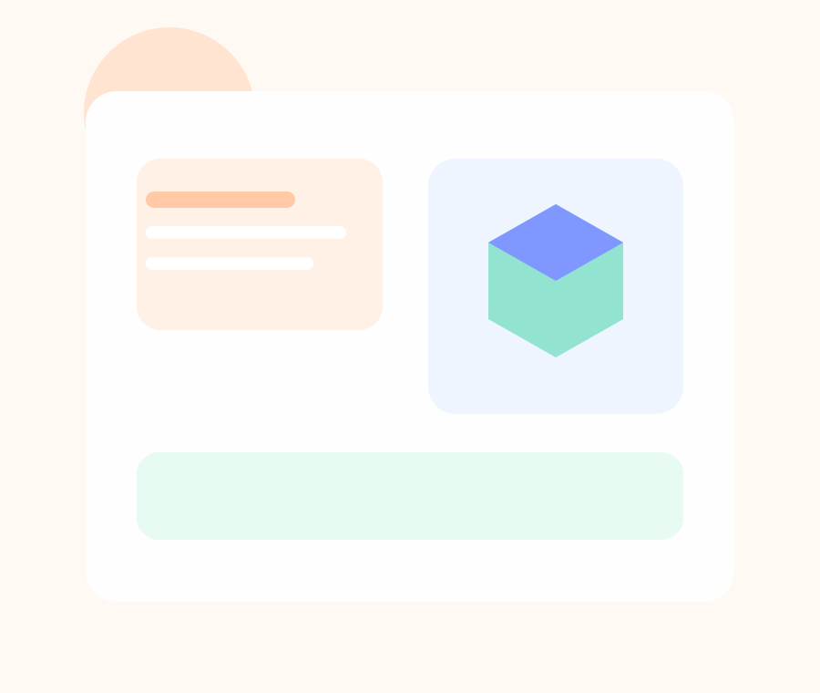

Von der ersten Idee bis zum echten Objekt: gestalten, testen, verbessern und produzieren.
Dieser Projektkurs verbindet kreatives Denken mit technischem Verständnis. Ihr entwickelt eigene Produkte oder Modelle, lernt digitale Entwürfe kennen und erlebt, wie aus einer Idee Schritt für Schritt ein reales Objekt wird.
Im Projektkurs 3D-Druck arbeitet ihr an der Schnittstelle von Design, Technik und praktischer Umsetzung. Ihr beschäftigt euch damit, wie Formen geplant, Modelle aufgebaut und Drucke so vorbereitet werden, dass sie am Ende nicht nur spannend aussehen, sondern auch funktionieren. Dabei geht es um Gestaltung, Material, Genauigkeit, Nachhaltigkeit und die Frage, wie aus digitalen Konzepten greifbare Ergebnisse entstehen.
Der Kurs ist besonders spannend für alle, die gern tüfteln, kreativ arbeiten und sehen wollen, wie Ideen wirklich Form annehmen. Denkbar sind Prototypen, Alltagshelfer, Ausstellungsobjekte oder kleine Serien, die am Ende sichtbar machen, was im Kurs entstanden ist.
